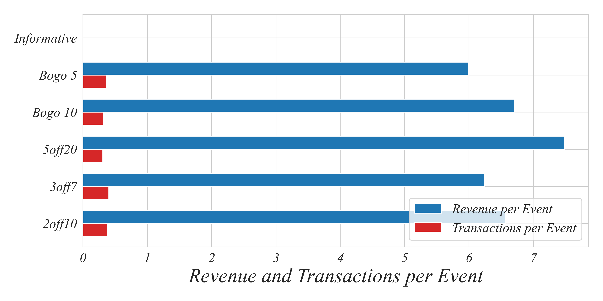

ECON 0150 | Economic Data Analysis
Part 1.6 | Grouping Data
Example 1.6 | Starbucks Offers
# Import packages
import pandas as pd
# Load data
data = pd.read_csv("starbucks_offers.csv")
Starbucks Offers | The Original Table
We have a table of events …
>not straightforward to see which offers are most effective
Starbucks Offers | Grouping and Summing
We could start by summarizing total revenue by Offer ID.
- Filter (if needed; keep all rows for now)
# Filter (no filter here yet)
#data = data[filter]
# Group by ID
grouped_by_id = data.groupby("Offer ID")
# Sum revenue by group
grouped_revenue = grouped_by_id["Revenue"].sum()
Starbucks Offers | Grouping and Summing

Starbucks Offers | Grouping
We can group on any cateogrical variable, like Event:
# Summarize total revenue by 'Event'
event_summary = data.groupby("Event")["Revenue"].sum()
> “Offer” has 0 revenue, so you’ll see zeros for those rows
Starbucks Offers | Use Grouping to Count
We can also use groups to count how many rows there are for each event type:
# Count number of each event
event_count = data.groupby("Event")["Event"].count()
> lets use counting approach to help us determine effectiveness
Starbucks Offers | Filtering + Grouping
Lets account for these zero revenue events by filtering for transactions.
- Filter
Event == "transaction" (exclude zero-revenue “Offer” rows)
# Filter for transactions only
transactions_only = data[data["Event"] == "transaction"]
# Group by Offer ID
transaction_groups = transactions_only.groupby("Offer ID")
- Take the mean of the revenue column
# Take the mean revenue
mean_revenue = transaction_groups["Revenue"].mean()
Starbucks Offers | Filtering + Grouping

> this often gives a better picture of how much people spend per transaction when they use the offer
> but we might also want to account for how many times the offer was sent out in the first place
Starbucks Offers | Drawing Conclusions
- How many times was each offer type sent?
# Count offers by Offer ID
offers_count = data.groupby("Offer ID")["Event"].count()
Starbucks Offers | Drawing Conclusions
- How many times was each offer actually used?
# Count transactions by Offer ID
transactions_only = data[data["Event"] == "transaction"] # Filter for Transaction
transactions_count = transactions_only.groupby("Offer ID")["Event"].count()
Starbucks Offers | Drawing Conclusions
- Revenue by group.
# Sum revenue by Offer ID
grouped_revenue = data.groupby("Offer ID")["Revenue"].sum()
Starbucks Offers | Combining Results
> lets find the value for each offer type
Combine offers_count, transactions_count, and grouped_revenue into a single data frame.
summary = pd.DataFrame({
"Offers": offers_count,
"Transactions": transactions_count,
"Revenue": grouped_revenue
})
Use this combined dataframe to construct new columns.
# Create a "Revenue per Offer" column
summary["Revenue_per_Offer"] = summary["Revenue"] / summary["Offers"]
# Create a "Transactions per Offer" column
summary["Transactions_per_Offer"] = summary["Transactions"] / summary["Offers"]
Starbucks Offers | Grouped Bar

> different axis scales make it difficult to interpret
Starbucks Offers | Dual-Axis Grouped Bar

> maybe a bit better
Starbucks Offers | Interpretation
- The offer 5off20 has the highest revenue but a lower redemption rate.
- The offer 3off7 has a high redemption rate but the discount may be costly to Starbucks.
- The offer 2off10 lands solidly in the top on both metrics and represents a more modest discount.
Part 1.6 | Summary
- Group and Aggregate: Group by relevant columns to quickly summarize data
- Filtering Matters: Filter out irrelevant rows before grouping
- Common Aggregations: Use summaries like sum, count, mean, or max
- Widespread Use: This technique is core to data analysis in nearly every field
- Next Steps: Combine grouping and filtering with joins, pivots, or merges for even richer analysis and visualization.